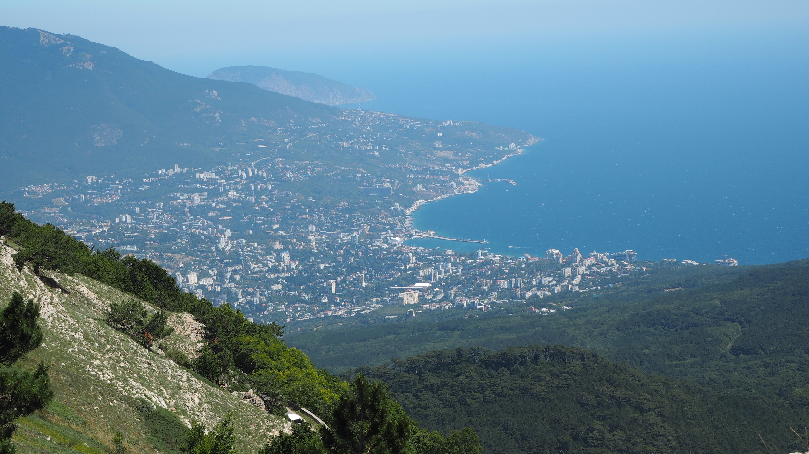
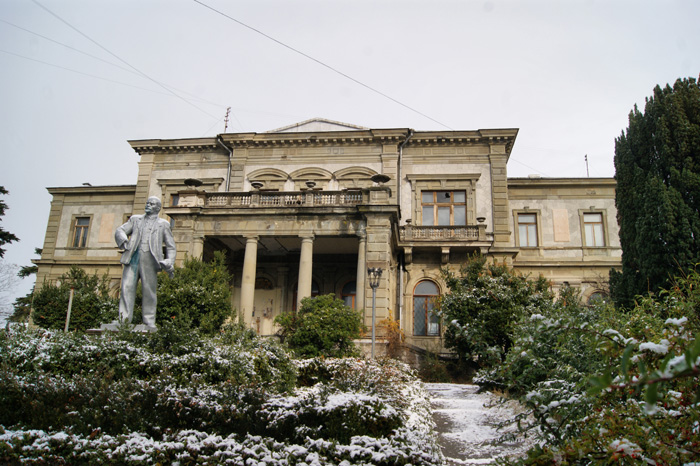
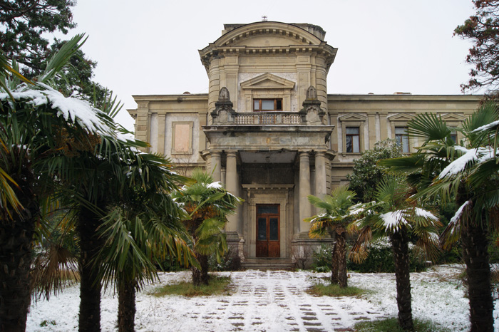
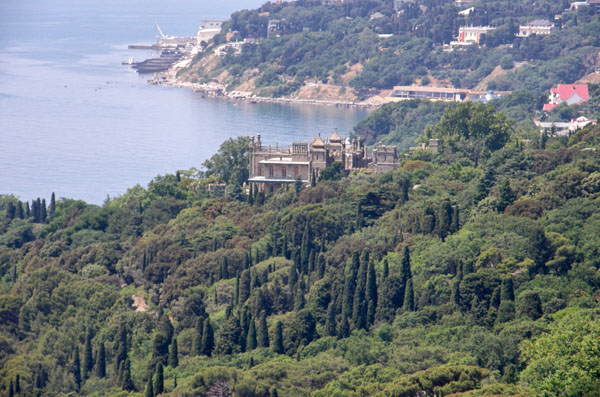
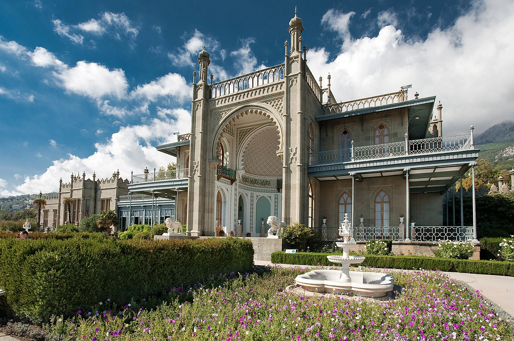
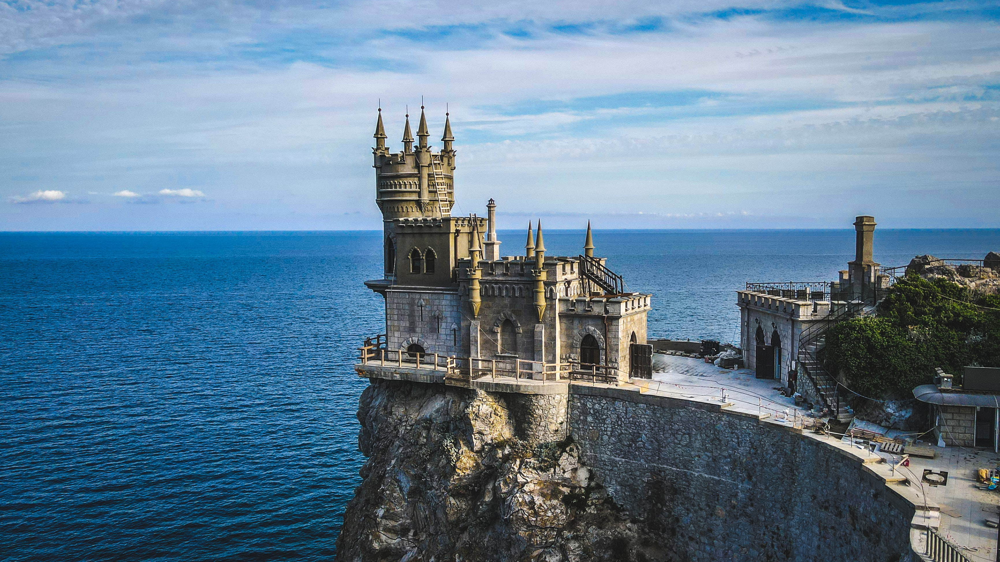

Крим узимку: Велика Ялта,
або Дієвий спосіб лікування сезонної депресії
Виявляється, Південний берег Криму взимку — як огранений діамант порівняно із самородним алмазом. Ні тобі довжелезних черг у численні музеї, ні тисяч автівок на вузьких звивистих дорогах, ну а ціни зовсім не кусаються — 100-200 гривень за номер у комфортабельному готелі у самій Ялті — столиці курортного Криму. Щоправда, в морі не покупаєшся (зима все-таки), але є чимало басейнів з теплою морською водою, навіть олімпійський басейн просто неба. Сонця значно більше, ніж у зимових Карпатах. І не вірте у байки про низькі темні хмари й постійний шторм — це все прерогатива кримської осені, а не зими. Фантастичні краєвиди — з одного боку безмежна морська далечінь, з іншого — скелясті засніжені гірські вершини. Ну а варіантів відпочинку — безліч, навіть для фанатів гірських лиж: у горах сніг лежить півтораметровим шаром, а інфраструктура не гірша, ніж у Карпатах. Наприклад, на легендарному плато Ай-Петрі встановлено снігові гармати, й при досить комфортній плюсовій температурі у Ялті на айпетрівських схилах завжди є сніг.
Якщо ми вже заговорили про Ялту, то на ній і зупинимось. Отже, температура тут рідко опускається нижче нульової позначки, сніг якщо і падає, то майже одразу тане. Одне слово — прекрасний клімат для лікування зимової депресії. Ціни в закладах харчування практично такі ж, як і влітку, але проживання значно падає в ціні. В готелі, де влітку номер коштував 600 гривень за добу, в період до і після новорічних свят він може коштувати у шість разів менше. Екскурсійна програма практично та сама, що й улітку. І далеко не потрібно їхати, адже в межах Великої Ялти розташовані Лівадійський, Юсупівський (у Кореїзі), Масандрівський та Алупкинський палаци, а ще Ластівчине гніздо, Харакс, Дюльбер та розкішні вілли Сімеїза. Зовсім поряд Нікітський ботанічний сад, який і взимку зачаровує своєю екзотичною красою; найбільший водоспад Криму Учан-Су — взимку це дійсно водоспад, а не пересохлий потічок; зоопарк «Казка» — найкращий у країні приватний зоопарк; численні печери, обладнані для екскурсій. А кому цього мало — можете поїхати трохи далі, наприклад, у Балаклаву, Севастополь чи Бахчисарай.
Ялта. Палац нащадків Мордовської орди
Дивне місто все таки Ялта. Такого контрасту між багатством і бідністю, між розкішшю і розрухою в Україні більше не знайдеш. Набережна блищить усіма кольорами, а на околицях комунальні напівзруйновані дерев’яні будинки-бараки (сам бачив). Тут тобі палац, а там стоять стіни без дахів… До речі, про палаци: вони тут дуже різноликі й різностильові. Більшість із них, в Ялті і Великій Ялті, нині є відомими екскурсійними об’єктами. Але є й такі, які практично ніхто не знає, як наприклад мініпалац Вадарської, хоч вони і перебувають у прекрасному стані, а є такі, що і невідомі, і стан у них далеко не найкращий, як, наприклад, палац Мордвинова. Хоча нічим цей палац не гірший за багато інших кримських палаців, але так сталося що свого часу він опинився у власності армії, ну а те що належить армії, свого часу виявилося таким собі сіном під собакою (прикладом може служити палац у Леськовому).
 Алупка. Місто, церква, парк і, звичайно, палац
Князь Воронцов був чи не найвідомішою людиною свого часу, але давайте не будемо кривити душею – чи знали ви це прізвище до відвідин Алупки? Мабуть все таки ні. Воєначальник та державний діяч (три роки керував російським окупаційним корпусом у Франції – це вже про дещо каже), губернатор Новоросії, намісник Бесарабії та Кавказу, найбільший поміщик імперії ну і т.д. і т.п. Але пересічному громадянину він більше відомий завдяки діабазовому диву, яке є однією з кримських візитівок і одним із найгарніших палаців України.
 “Ластівчине гніздо” – візитівка Криму
Цей палацик на скелі знають всі. Це візитівка Криму. Біля нього завжди людно, а в ресторані (який всередині) завжди заброньовано. Туристи (або ж просто курортники) з поважним виглядом обходять палац, фотографуються (хоч це зробити проблематично – завжди хтось проходить перед об’єктивом); споглядають краєвиди синьої далечі із Парусом та Ведмедем на обрії, із катерами та яхтами, із санаторним пляжем; ахають і охають від погляду вниз зі скелі, де море монотонно тисячі років продовжує розбивати свої хвилі об кримські куести (та й самі куести потроху точити). А потім з поважним та гордим виглядом, з відчуттям виконаного обов’язку (галочку поставлено) вони відступають (лише курортники, не хвилі).
